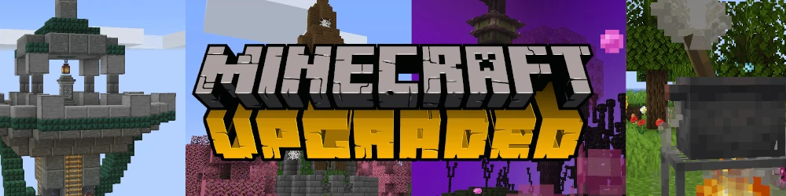

🇬🇧🇺🇸 Read in English
Wink' présente

Pour Minecraft 1.16.5
Mettre à jour Minecraft avec un modpack
- Une sélection de 150 mods de qualité
- Des mods qui s'intègrent au vanilla
- De quoi faire pour tous les goûts — explorez, combattez, construisez, cuisinez... voyez plutôt la gallerie
- Explications en jeu
- Une expérience de jeu faite main et aux petits oignons
- Une expérience immersive avec de nouveaux sons et de nouveaux visuels
- Besoin de moins de 4G de RAM (3.5 recommandés)
Télécharger
Version 1.16.5-1.0
Ou Télécharger sur Curse
À propos de mods
Tous les mods de Minecraft : Upgraded ont été choisis rigoureusement et configurés pour s'intégrer avec le reste du contenu.
Liste des mods
- Abnormals Core by Team Abnormals
- Abnormals Delight by Team Abnormals
- AdditionalBanners by Darkhax
- Advancement Plaques by Grend
- Alex's Mobs by Alexthe666
- Apotheosis by Shadows_of_Fire
- Aquaculture 2 by Shadowclaimer, Girafi
- Atmospheric by Team Abnormals
- AutoRegLib by Vazkii
- Autumnity by Team Abnormals
- Bamboo Blocks by Team Abnormals
- Bayou Blues by Team Aurora
- Beacon Chunkloaders by CAS_ual_TY, LexManos
- Bedspreads by C4
- Berry Good by Team Abnormals
- Better Badlands by Team Aurora
- Better End Sky by Jet_Mouse
- Better Advancements by way2muchnoise
- Better Biome Blend by FionaTheMortal
- BetterBurning by Darkhax
- YUNG's Better Mineshafts by YUNGNICKYOUNG
- YUNG's Better Strongholds by YUNGNICKYOUNG, Acarii
- Better Third Person by Socolio
- Big Brain by TallestEgg
- Biomes O’ Plenty by Forstride, Adubbz
- Block Swap by Corgi Taco
- Blood Particles by ModdingLegacy, KingPhygieBoo, Lachney, Raptor
- Bookshelf by Darkhax
- Bountiful by Ejektaflex (code, item/gui art), AkiShirai (block art)
- Buzzier Bees by Team Abnormals
- Carry On by Tschipp, Purplicious_Cow, cy4n
- Charm by svenhjol, warlordwossman, Coranthes
- Cherished Worlds by C4
- Chimes by BlewberryPie
- Citadel by Alexthe666
- clickadv mod by Love, Cheese and small house plants
- Client Tweaks by BlayTheNinth
- Cloth Config v4 API par
- Clumps by Jaredlll08
- Collective by Rick South
- Colorful Campfires by Tfarcenim
- Comforts by C4
- The Conjurer by KingPhygieBoo, Vamacheron, Silver_David, Lachney
- Controlling by Jaredlll08
- CraftTweaker by Jaredlll08, Kindlich and StanH
- Create by simibubi
- Cycle Paintings by Rick South
- Damage tint by DeadlyMC
- Dash by KingPhygieBoo, Jesterguy
- Decorative Blocks by stohun, lilypuree
- Dismount Entity by Rick South
- Dynamic Surroundings by OreCruncher
- Dungeons Enhanced by Barion, Mo
- Dungeons Mobs by the_infamous_1
- Dungeons Plus by Silver_David
- Elevator Mod by VsnGamer
- Enchant With Mob by bagu_chan
- EnchantmentDescriptions by Darkhax
- The Endergetic Expansion by Team Abnormals
- Enhanced Celestials by Corgi Taco
- Environmental by Team Abnormals
- Equipment Compare by Grend
- Etched by Jackson, Ocelot, Farcr
- Fabrication by [unascribed]
- Fantasy Mounts by Ben Dol
- Farmer's Delight by vectorwing
- Farsight by HerrBrandstetter
- Farsight mod by Love, Cheese and small house plants
- FastLeafDecay by Olafski
- Ferrite Core by malte0811
- Fish On The Line by Rick South
- Fish Traps by ktboogey
- Flywheel by Jozufozu
- Furnish by Wink
- Game Menu Mod Option by MORIMORI0317
- Glazed Symmetry by iamevn_mc
- Global XP by bl4ckscor3
- Gravestone Mod by Max Henkel
- Guard Villagers by TallestEgg, HadeZ/SadNya69 for the textures.
- Healing Campfire by Rick South
- Highlighter by Grend
- Horizontal Glass Panes by CodenameRevy
- Iceberg by Grend
- Ice Prevents Crop Growth by Rick South
- Infernal Expansion by nekomaster1000
- Inspirations by KnightMiner
- Item Borders by Grend
- Just Enough Items by mezz
- JEI Professions by pau101
- JEI Tweaker by Jaredlll08
- Just Enough Resources by way2muchnoise
- Kiwi by Snownee
- Leap by KingPhygieBoo, Jesterguy
- Legendary Tooltips by Grend
- Mantle by Slime Knights
- Macaw's Furniture by Sketch Macaw
- Mining Helmet by KingPhygieBoo, MCVinnyQ, Silver_David
- Mo’ Structures by Frqnny
- Mouse Tweaks by Ivan Molodetskikh (YaLTeR)
- Mowzie's Mobs by BobMowzie, pau101
- Neko’s Enchanted Books by Nekomaster, CGessinger
- No Hostiles Around Campfire by Rick South
- OpenLoader by Darkhax
- Ore Excavation by Funwayguy & Darkosto
- Paraglider by Tictim
- Personality by Team Abnormals
- Pick Up Notifier by Fuzs
- Placebo by Shadow_of_Fire
- Practical Tools by astradamus
- Quark by Vazkii, Wiiv, WireSegal, MCVinnyq
- Quark Oddities by Vazkii, Wiiv, WireSegal, MCVinnyq
- Rain Be Gone Ritual by Rick South
- Rare Ice by shedaniel
- Savage & Ravage by Team Abnormals
- Scaffolding Drops Nearby by Rick South
- Scarecrow's Territory by SuperMartijn642
- Screenshot to Clipboard by comp500
- Seals by Buuz135
- Selene by MehVahdJukaar
- Shield Mechanics by Love, Cheese and small house plants
- Shutup Experimental Settings! by Corgi Taco & RdvDev2
- Simple Delights by Anna Erisian
- Simple Farming by enemeez
- Simple Planes by adoxentor, Przemyk
- Skin Changer by Edoren
- Sleep Sooner by Rick South
- Small Ships Mod by talhanation
- Snow! Real Magic! by Snownee
- Stables by FlashFyre
- Storage Drawers by Texelsaur
- Structure Gel API by Silver_David, KingPhygieBoo, Jonathing
- SuperMartijn642's Config Lib by SuperMartijn642
- SuperMartijn642's Core Lib by SuperMartijn642
- Supplementaries by MehVahdJukaar, Plantkillable
- Thatched by Lilypuree
- Tips by Darkhax
- Toast Control by Shadow_of_Fire
- Tom's Simple Storage Mod by tom5454
- Towers Of The Wild by idrae_
- Traveler's Titles by YUNGNICKYOUNG
- 2 players 1 horse by Beethoven92
- Upgrade Aquatic by Team Abnormals
- Upstream by Corgi Taco
- Village Employment by EnderPreston
- w2w by Noobanidus
- Waila by profmobius
- Wall-Jump! by genandnic
- Waystones by BlayTheNinth
- Weapon Throw by dainxt
- Windowlogging by Simibubi, Grimmauld
- Xaero's Minimap by Xaero96
- Xaero's World Map by Xaero96
- YUNG's API by YUNGNICKYOUNG
- YUNG's Bridges by YUNGNICKYOUNG, Acarii
Installation
- Avec MultiMC
- Téléchargez le modpack en fichier Zip (lien ci-dessus)
- Dans MultiMC : Clic Droit > Créer une instance
- Dans le menu de gauche, sélectionner Importer depuis un Zip
- Ok
- Avec le Launcher Minecraft
- Téléchargez le modpack en fichier Zip (lien ci-dessus)
- Suivez mon tutoriel pour importer un modpack